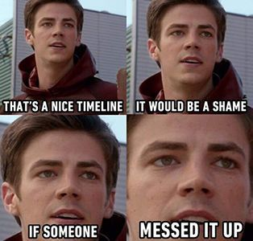
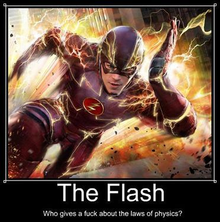
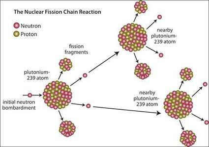

The Flash S04E15: A quelle vitesse courrait il ?
Nous sommes arrivé à la saison 4 de The Flash, et cette semaine l’épisode 15 était diffusé.
La particularité de cette semaine: la quasi-totalité de l’épisode se déroule au début de l’explosion d’une bombe atomique.
La problématique: la ville va être rasée, comment sauver les habitants de Central City, au secours Barry aide nous, la routine.

Déjà vu
Une fois l’intrigue principale posée j’étais hypé, un scenario quasi identique avait déjà vu le jour dans le comics. Le problème avait été résolu ainsi:
Barry évacue la ville entière avant que le rayonnement de l’explosion ne puisse toucher quelqu’un.
Cette péripétie a été calculée, la conclusion était la suivante: pour réussir cet exploit, Barry devait maintenir une vitesse moyenne d’au moins 9 400 000 millions de fois la vitesse de la lumière.
9 MILLIONS de MILLIONS de fois la VITESSE DE LA LUMIÈRE !
Pas déjà vu
Au fur et à mesure de l’épisode j’ai vite compris que la prouesse du comics n’allait pas être renouvelée, si vous l’avez vu , vous savez déjà qu’on arrête une bombe nucléaire en lui mettant une raclée à la balle au prisonnier.
Je ne suis pas là pour parler scenario ni entrer dans un débat « bouhouhou dans le comics c’est pas pareil » passons.
Calculons
Avant de commencer: par moment il marche, par moment il reste fixe. Ce n’est donc pas la vitesse maximale atteinte que nous pouvons estimer ici mais sa vitesse moyenne minimale sur la durée de l’épisode.

Au final ça reste une série, prenons autant de liberté que les scénaristes. Bref, amusons nous.
Nous avons donc en notre possession les éléments suivants:
- Le temps « temps Flash » qui s’est écoulé
Nous pourrions l’appeler le « temps ressenti par flash » ou autre, c’est le temps qui nous apparait à nous en vitesse « normale ». Entre le début et la fin de la course de Flash, il se passe donc 20 minutes et 13 secondes soit 1213 secondes.

- Nous savons aussi qu’une bombe explose en 8*10-7 secondes :
Les neutrons voyagent à une vitesse de 10 millions de mètres par seconde soit environs 3% de la vitesse de la lumière.
Le procédé complet d’une explosion dure environs l’équivalent de 80 traversés de neutron dans le diamètre du matériel en fission.
Une masse critique d’uranium est d’environs 0.1 mètres
Le temps que prendrait un neutron à traverser la sphère est donc : 0.1 secondes/110⁷metres/secondes soit 110⁻⁸secondes. Multiplié par 80, 0.0000008 secondes
A noter que le procédé se répète 80 fois mais que 99.9% de l’énergie relâchée l’est dans les 10 dernières répétitions, on pourrait imaginer le léger recul des personnages lors de la charge finale comme étant ce 0.1%, nous les retirons donc, faisant passer notre chiffre à 7*10⁻⁷ secondes
- Rapport temps Flash/Temps réel
Maintenant nous pouvons calculer le facteur temps flash => temps réel :
(1213)/(7*10⁻⁷) => Cela nous donne (je fais cadeau des chiffres après la virgule) :
1 732 857 142. Nous pouvons donc dire qu’il court approximativement 1.73*10⁹ fois la vitesse d’un être humain standard .
- Mixez le tout
Un humain moyen court à 9 – 12 km/h. Prenons 10km/h. Je ne prend pas une valeur de sprint car nous sommes capables de parler et réfléchir en courant, beaucoup moins en sprintant.
Nous arrivons donc à une vitesse moyenne minimale de 17.3*10⁹ km/h. Soit:
17 milliards 300 millions km/h.
4805555555.5 mètres par seconde.
16 fois la vitesse de la lumière.